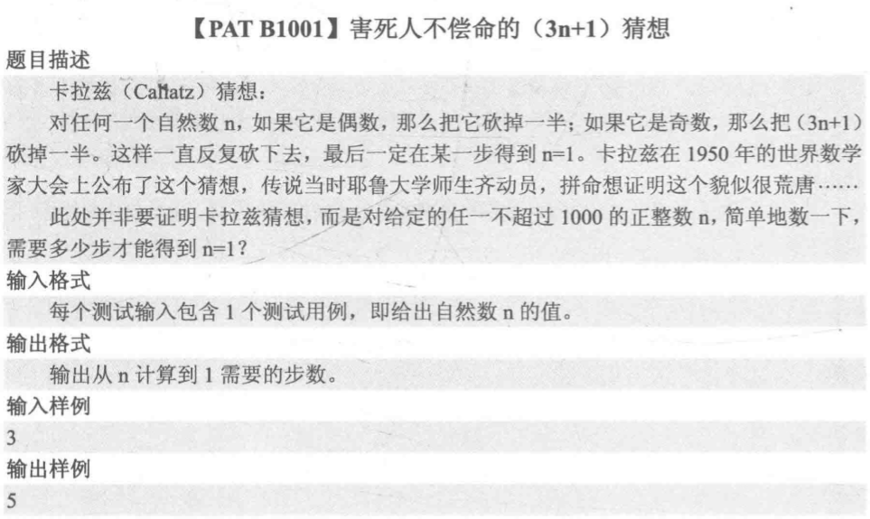
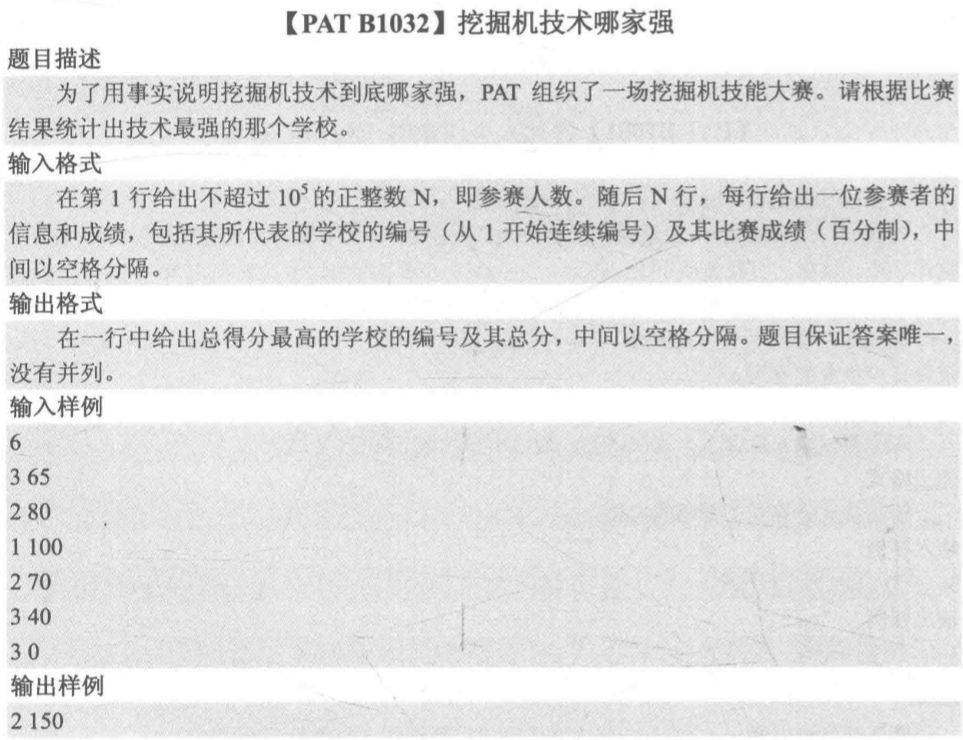
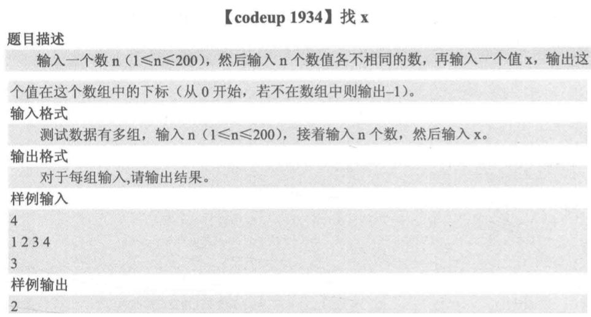
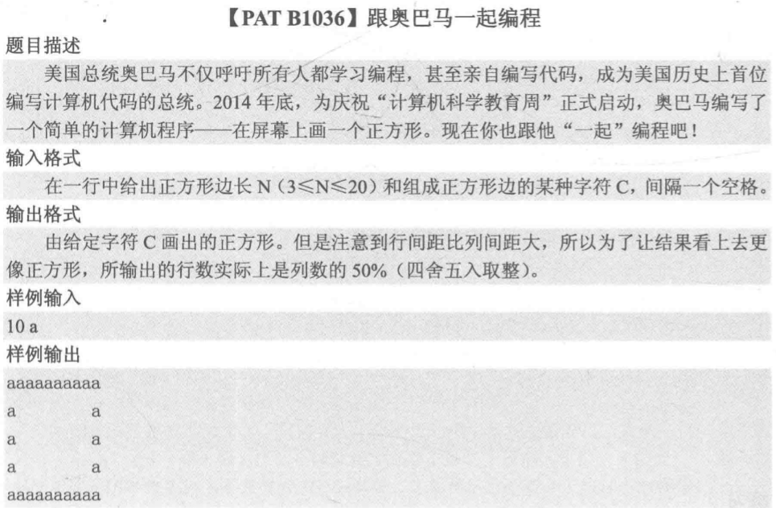
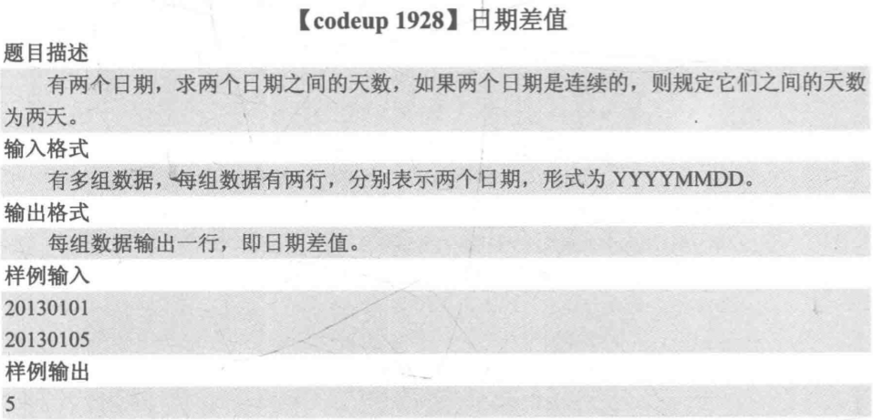
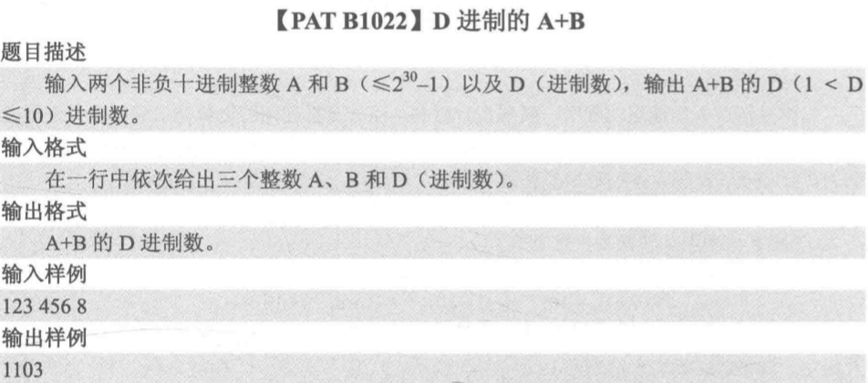
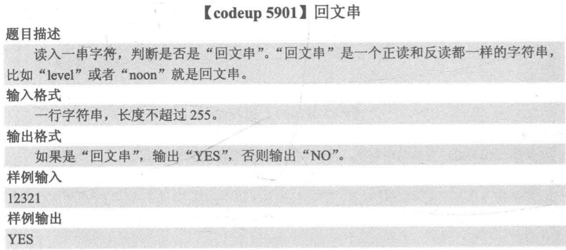
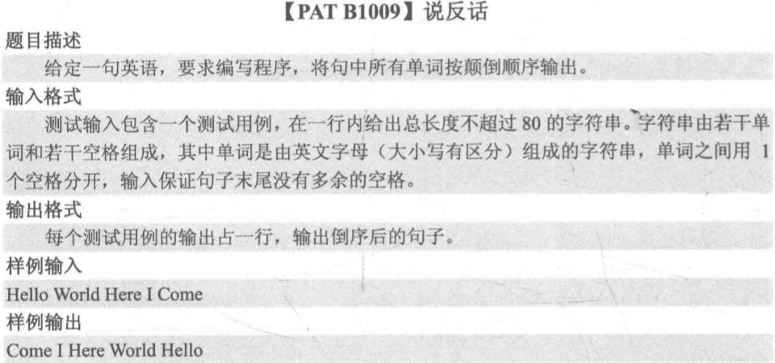

入门篇(1)：入门模拟

文章目录
概述
对于一些简单的模拟题，没有涉及到很多算法，主要考察coding能力。一般这种类型的题目分为以下几种：
- 简单模拟
- 查找元素
- 图形输出
- 日期处理
- 进制转换
- 字符串处理
简单模拟
这类题目不涉及算法，就是“题目怎么说，你就怎么做”，此所谓简单模拟。几个例子如下：
例子一：

我的解法如下：
1 2 3 4 5 6 7 8 9 10 11 12 |
#include <cstdio>
int main(){
int a;
scanf("%d",&a);
int step=0;
for(a;a!=1;){
step++;
a=(a%2==0? a/2:(3*a+1)/2);
}
printf("%s%d","步数为：",step);
return 0;
} |
例子二：

我的解法如下：
1 2 3 4 5 6 7 8 9 10 11 12 13 14 15 16 17 18 19 20 21 22 23 24 25 26 27 |
#include <cstdio>
//定义大数据的数组在函数外定义，申请系统栈区空间，空间够
const int MAX=100000;
int total[MAX]={0};
int main(){
int count,id,score;
scanf("%d",&count);
for(int i=count;i>0;i--){
scanf("%d%d",&id,&score);
total[id]+=score;
}
//筛选最大
int temp_id,temp_score;
for(int i=0;i<count;i++){
if(i==0){
temp_id=i;
temp_score=total[i];
}else{
if(total[i]>temp_score){
temp_id=i;
temp_score=total[i];
}
}
}
printf("%d %d",temp_id,temp_score);
return 0;
} |
查找元素
这类题目就是在给定的元素中查找满足条件的元素，常用方法有遍历和二分查找法。一个例子如下：

我的解法如下：
1 2 3 4 5 6 7 8 9 10 11 12 13 14 15 16 17 18 19 20 21 22 |
#include <cstdio>
int main(){
int count,val;
scanf("%d",&count);
int all[count];
for(int i=0;i<count;i++){
scanf("%d",all+i);
}
scanf("%d",&val);
//查找
int i=0;
for(i;i<count;i++){
if(all[i]==val){
printf("%d",i);
break;
}
}
if(i==count){
printf("%d",-1);
}
return 0;
} |
图形输出
这类题目就是根据题目的要求，找到规律输出图像，一般图像由字符做成。一个例子如下：

我的解法如下：
1 2 3 4 5 6 7 8 9 10 11 12 13 14 15 16 17 18 |
#include <cstdio>
#include <cmath>
int main(){
int columns;
char c;
scanf("%d %c",&columns,&c);
//求行数
int rows=int((float)columns/2+0.5);
//输出图形
for(int i=0;i<rows;i++){
for(int j=0;j<columns;j++){
if(j==0||j==columns-1||i==0||i==rows-1) printf("%c",c);
else printf(" ");
}
if(i!=rows-1) printf("\n");
}
return 0;
} |
日期处理
这类问题比较复杂，涉及到平年、闰年，大月和小月的问题。需要明白以下规则：
- 年份是4的倍数且不是100的倍数、年份是400的倍数的都是闰年。
- 平年的2月份有28天，闰年的2月份有29天。
- 1，3，5，7，8，10，12月有31天，其余都是30天。
一般解决这类问题的一个思路就是：由于处理月份的天数很麻烦，所以干脆直接用一个二维数组枚举出每个月的天数（第一维是月份；第二维的第一个元素是平年的月份天数，第二个元素是闰年的），此外还需要一个判断是否是平年的函数。
一个例子如下：

我的解法如下：
1 2 3 4 5 6 7 8 9 10 11 12 13 14 15 16 17 18 19 20 21 22 23 24 25 26 27 28 29 30 31 32 33 34 35 36 37 38 39 40 41 42 43 44 45 46 47 48 49 50 51 52 53 54 |
#include <cstdio>
//定义一个判断是否是平年的函数
int isLeapYear(int y){
return (y%4==0&&y%100!=0)||(y%400==0);
}
int main(){
//定义一个表示每月天数的二维数组
int days[13][2]={
{0,0},
{31,31},
{28,29},
{31,31},
{30,30},
{31,31},
{30,30},
{31,31},
{31,31},
{30,30},
{31,31},
{30,30},
{31,31},
};
int timeOne,timeTwo,y0,m0,d0,y1,m1,d1;
//输入多组数据，属于多点测试
while(scanf("%d%d",&timeOne,&timeTwo)!=EOF){
//保证timeOne早于timeTwo
if(timeOne>timeTwo){
int temp=timeOne;
timeOne=timeTwo;
timeTwo=temp;
}
//分类数据
y0=timeOne/10000,m0=timeOne%10000/100,d0=timeOne%100;
y1=timeTwo/10000,m1=timeTwo%10000/100,d1=timeTwo%100;
int step=1;
//早的日期追赶后的日期
for(step;!(y0==y1&&m0==m1&&d0==d1);step++){
//首先day加一
d0++;
if(d0-1==days[m0][isLeapYear(y0)]){
d0=0;
m0++;
}
if(m0==13){
y0++;
m0=1;
}
//计数加一
}
printf("%d\n",step);
}
return 0;
} |
进制转换
此类问题的一般解决思路就是： 想将P进制的数据转换成10进制数，然后将此10进制数转换成Q进制数 。具体的方法如下：

一个例子如下：

我的解法如下：
1 2 3 4 5 6 7 8 9 10 11 12 13 14 15 16 17 18 19 20 21 22 23 24 |
#include <cstdio>
int main(){
int a,b,c;
scanf("%d%d%d",&a,&b,&c);
//先把10进制数相加
a+=b;
//采用除基取余法
int res[30]={0};
int step=0;
for(step;a!=0;step++){
res[step]=a%c;
//printf("%s%d\n","现在是：",a%c);
a/=c;
}
//打印
for(int i=step;i>0;i--){
printf("%d",res[i-1]);
}
//如果是0，则打印0
if(step==0){
printf("%d",0);
}
return 0;
} |
字符串处理
就是对字符串进行处理咯，但是需要注意字串的边界和题目要求的细节，C/C++处理字串还是很方便的，用gets方法可以输出一行字串。 判断字串的长度的方法就是遍历字串的字符，直到到达'\0' 。几个例子如下：
例子一：
我的解法如下：
1 2 3 4 5 6 7 8 9 10 11 12 13 14 15 16 17 18 19 20 21 |
#include <cstdio>
int main(){
char judge[255];
gets(judge);
//遍历字串
int count=0;
for(count;judge[count]!='\0';count++){}
bool isYes=true;
for(int i=0;i<(count%2==0? count/2:(count-1)/2);i++){
if(judge[i]!=judge[count-1-i]){
isYes=false;
break;
}
}
if(isYes){
printf("%s","YES");
}else{
printf("%s","NO");
}
return 0;
} |
例子二：

我的解法如下：
1 2 3 4 5 6 7 8 9 10 11 12 |
#include <cstdio>
int main(){
char val[80];
gets(val);
int count=0;
//计算字串长度
for(count;val[count]!='\0';count++){}
for(int i=count;count>0;count--){
printf("%c",val[count-1]);
}
return 0;
} |
文章作者 P1n93r
上次更新 2020-01-15